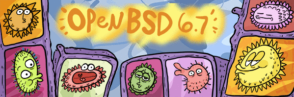

Read more about the current release
Our efforts emphasize portability, standardization, correctness, proactive security and integrated cryptography. As an example of the effect OpenBSD has, the popular OpenSSH software comes from OpenBSD.
OpenBSD is freely available from our download sites.
The current release is OpenBSD 6.7, released May 19, 2020.
OpenBSD is developed entirely by volunteers. The project's development environment and developer events are funded through contributions collected by The OpenBSD Foundation. Contributions ensure that OpenBSD will remain a vibrant and free operating system.